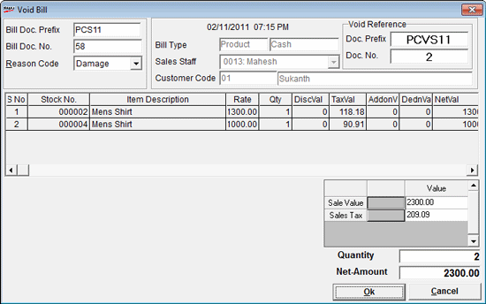

The Void Bill is used to cancel an already settled bill, which is made on the current day of operations. Only those bills that are settled on the current Shoper date can be voided. Once the day close operations are performed, then the bills made on the previous Shoper date cannot be voided.
The Void Bill window is displayed.

Bill Doc Prefix: Enter the Document Prefix of the bill to be cancelled.
Bill Doc No.: Enter the Document Number of the bill to be cancelled. If the bill is available in the system the details of the bill get displayed. Otherwise, an error message prompts the non-availability of the bill for voiding.
Reason Code: Select the reason for the cancellation of the bill, from the drop down list.
Void Bill Date and Time: The Shoper date is displayed, which is considered as the bill cancellation date. The system time is displayed next to the Shoper date.
Bill Type: The bill type (Product/ Service) of the entered bill number is displayed in this field, i.e., the bill being cancelled is a Product Bill or Service Bill is displayed. Also, the transaction type of the bill (Cash/ Credit) is displayed in the next field.
Sales Staff: Sales man ID of the salesperson who was involved in the billing is displayed.
Note: The cancellation of bills will be listed in the sales-man register and the cancellation value will be reduced from the net sale value for the sales staff.
Customer Code: The customer code of the bill being cancelled is displayed.
Customer Name: The customer name of the bill being cancelled is displayed.
Void Reference
Doc. Prefix: The prefix set for void bill gets displayed automatically.
Doc No.: The document number for the void bill is generated automatically.
Item Details Grid
The item details of the document number selected for cancellation get displayed in the Item Details grid.
Note: In case Batch, Grade or Location is enabled then the item details grid and direct entry grid would contain Batch, Grade and Location columns respectively. Click here to view the detail part of the Void bill window.
Bill Details Grid
This grid displays the bill details like total sale value, total discounts, total Addons, total deductions and total sales tax.
Quantity: The quantity of items in the bill being cancelled is displayed.
Net-Amount: The net amount of the bill being cancelled is displayed.
Note: On cancelling a settled bill which included a Sales Advice Slip/ Sales Order/ Service Order, then the status of the Sales Advice Slip/ Sales Order/ Service Order is reinstated and can be used later, depending on the parameter setting.